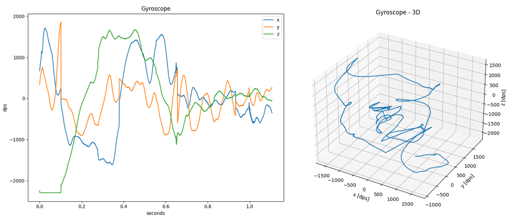

Utilities
The SDS-Framework pack includes in the folder utilities several utilities that are implemented in Python.
Install Python and the packages listed in the file utilities/requirements.txt to run these utilities:
- SDSIO Control File
*.sdsio.yml: configures the SDSIO-Server or the FVP VSI3 simulation interface. - SDSIO-Server: enables recording and playback of SDS data files via USB, socket (TCP/IP) or serial (UART) connection.
- SDS-View: graphical data viewer for SDS data files.
- SDS-Convert: converts SDS data files into CSV, Qeexo V2 CSV, or WAV format.
- SDS-Check: checks SDS data files for correctness and consistency.
Setup
Perform the following steps to setup the Python environment for using the SDS utilities.
- Install Python or verify the version with:
>python --version
- Navigate to the folder
SDS/<version>/utilitiesand install the required Python packages withpip:
>cd %CMSIS_PACK_ROOT%/ARM/SDS/3.1.0/utilities
>pip install -r requirements.txt
- Add to the system Path environment variable the path to the
%CMSIS_PACK_ROOT%/ARM/SDS/3.1.0/utilitiesfolder.
Note
%CMSIS_PACK_ROOT%is just a placeholder for the Pack location on your local PC. The Path variable must be extended by the absolute path to theutilitiesfolder.
Windows
- On Windows, ensure that the environment variable PATHEXT contains the extension
.PY.
Tip
- When the Path environment variable is configured, you may simply start the utilities by using its name. For example, entering
>sdsio-serverstarts the utility.
SDSIO Control File: *.sdsio.yml
The SDSIO control file *.sdsio.yml configures:
- For the SDSIO-Server, the interface, workdir and steps for playback mode.
- For the FVP simulation models (VSI3), the interface, workdir, and steps for playback.
- For the SDS extension for VS Code, it configures the SDSIO-Server and the user interface.
sdsio:
sdsio: |
Content | |
|---|---|---|
interface: |
Optional | SDSIO-Server only: specifies the interface used to connect to the target firmware (default: usb). |
workdir: |
Optional | Directory containing *.sds files (default: current working directory). Relative paths are interpreted relative to the location of the *.sdsio.yml file. In AVH FVP simulations, the *.sdsio.yml file must reside in the simulator working directory. |
write-flush-records: |
Optional | Force recorded SDS data to disk after this many records (0 = after every record; default: disabled). The SDSIO-Server --write-flush-records command-line option overrides this setting. |
metadir: |
Optional | Directory for metadata files (default: workdir). This key is used by the SDS extension for VS Code. |
streams: |
Optional | Data stream information used by the SDS extension for VS Code. |
play: |
Optional | Playback step list that defines how *.sds files are played back (used in playback mode). |
flag-info: |
Optional | Human readable labels for user flags. This key is currently not used by SDSIO-Server or the VSI3 simulation interface. |
interface:
Note
- The
interface:settings are used by SDSIO-Server. The AVH FVP VSI3 simulation interface ignoresinterface:.
interface: |
Content | |
|---|---|---|
usb: |
Optional | Configure USB bulk interface. |
serial: |
Optional | Configure serial (UART) interface. |
socket: |
Optional | Configure TCP socket interface. |
usb:
usb: |
Content | |
|---|---|---|
high_priority: |
Optional | SDSIO-Server only: increase process priority (default: false). |
Example:
sdsio:
interface:
usb: # configure for USB interface
serial:
serial: |
Content | |
|---|---|---|
port: |
Required | Port name (examples: COM3, ttyS0, ttyUSB1, ...). |
baudrate: |
Optional | Baudrate (default: 115200). |
parity: |
Optional | Parity bit: none, even, odd, mark, space (default: none). |
stopbits: |
Optional | Stop bits: 1, 1.5, 2 (default: 1). |
Example:
sdsio:
interface:
serial: # configure for Serial interface with baudrate 230400 bps.
baudrate: 230400
socket:
socket: |
Content | |
|---|---|---|
ipaddr: |
Optional | IPv4 address to bind to in listen mode, or host address when using connect: (example: 192.168.0.100); default for connect: is localhost 127.0.0.1. |
netif: |
Optional | Network interface name (example: eth0); cannot be used with ipaddr. |
port: |
Optional | TCP port number (default: 5050). |
connect: |
Optional | When present, connect to ipaddr instead of listening; optional value is a message sent to the host when the connection is established (default: none). |
connect-time: |
Optional | Duration in milliseconds to discard incoming data after the connection is established (default: 50). |
Note
- The
ipaddr:andnetif:options are mutually exclusive. connect:requiresipaddr:and cannot be used withnetif:.netif:cannot be used in combination withconnect:.
Example:
Configure for Network interface.
sdsio:
interface:
socket: # configure for Network interface with default port
Configure for RTT interface via J-Link debug adapter.
sdsio:
interface:
socket: # configure for RTT interface
connect: "$$SEGGER_TELNET_ConfigStr=RTTCh;1$$"
port: 19021
streams:
The streams: node provides additional information about the SDS data streams to the SDS extension for VS Code. It provides the context between the data streams and the display format.
streams: |
Content | |
|---|---|---|
- name: |
Required | Name of the data stream. |
view: |
Optional | Format of the data stream for the viewer (signal, wav, image, heatmap, csv, csv2) |
play:
The play: node specifies one or more playback steps.
Each playback step defines the list of labels to play back for each opened SDS stream.
For one playback step, all files of the labels: list are concatenated and appear as one data stream for the firmware.
A pause (where the data stream needs to be closed and opened again by the firmware) is created with another - step: section.
play: |
Content | |
|---|---|---|
- step: |
Optional | Descriptive text for the playback step. |
recdir: |
Optional | Recording directory for generated *.p.sds files during playback; relative paths are relative to workdir:. |
setflags: |
Optional | Set user flags (bitmask); example: 0x01. |
clearflags: |
Optional | Clear user flags (bitmask); example: 0x01. |
labels: |
Optional | List of label names that define the playback sequence. |
Example:
sdsio:
interface:
usb:
workdir: ./algorithm/SDS Recordings
metadir: ./algorithm/SDS Recordings
play: # Playback script
- step: "Playback: ML_In.0"
labels: [ 0 ]
- step: "Playback: ML_In.rock.1.sds + ML_In.rock.2.sds + ML_In.rock.3.sds"
setflags: 0x02
clearflags: 0x01
labels:
- rock.1
- rock.2
- rock.3
flag-info:
The flag-info: node provides human readable labels for the user flags 0..7.
This information is currently not used by SDSIO-Server; it is intended for UI tooling.
flag-info: |
Content | |
|---|---|---|
- <flag-bit>: |
Required | Maps the user flag bit position 0..23 to a human readable label. |
Example:
sdsio:
flag-info:
- 0: Skip Algorithm A
- 1: Inject fault condition
- 7: Reserved
SDSIO-Server
The Python utility SDSIO-Server enables recording and playback of SDS data files via USB, socket (TCP/IP) or serial (UART) connection. It communicates with the target using a SDSIO-Client interface. Refer to the following sections for using the different client interfaces:
- USB for communication via USB using MDK-Middleware.
- RTT for communication via the RTT interface of a debug adapter (J-Link or pyOCD).
- Network for TCP/IP communication via IoT Socket using MDK-Middleware, LwIP, or CMSIS-Driver WiFi.
SDS data streams are stored in file that use the format <stream-name>.<label>[.p].sds. See Filenames for details. The contents of SDS data files are described by the YAML metadata file that use the format <stream-name>.sds.yml.
Usage
- Setup the Python environment.
- Configure via a YAML control file (
-c *.sdsio.yml) or specify the interface directly on the command line. - Terminate the server by pressing
Ctrl+Cor theXkey in the server application window.
usage: sdsio-server.py [-h] [-V] [{socket | serial | usb} [if-opts]] [-c sdsio.yml] [general-opts]
SDSIO-Server: record and playback SDS data stream files over USB, socket, or serial interface.
Configure via *.sdsio.yml file or specify the interface parameters directly on the command line.
options:
--help, -h Show this help message and exit
--version, -V Show program's version number and exit
interface (optional, default: usb; overrides interface specified in *.sdsio.yml):
{socket | serial | usb}
socket Run SDSIO-Server using socket interface
serial Run SDSIO-Server using serial interface
usb Run SDSIO-Server using USB interface
configuration:
--control, -c <*.sdsio.yml> Configure interface, SDS file directories, and playback steps
general-opts:
--playback, -p Start SDSIO-Server in playback mode (typically used in CI tests)
--workdir <path> Directory for SDS files (overrides *.sdsio.yml setting; default: current directory)
--mon-port, -m <port> Monitor control interface port
--log, -l <file> Redirect console output to a log file (typically for CI use)
--write-flush-records <records> Force recorded SDS data to disk after this many records (overrides *.sdsio.yml setting; 0 = after every record; default: disabled)
--verbose, -v Enable debug messages
--high-priority Increase process priority when using USB interface (requires elevated privileges)
Console input for SDSIO-Server:
The SDSIO-Server accepts directly on the console the following keyboard entries:
| Key | Action |
|---|---|
| R/r | Start recording |
| P/p | Start playback |
| S/s | Stop recording/playback |
| T/t | Reset target |
| A-H | Set user flags 0-7 |
| a-h | Clear user flags 0-7 |
| X/x | Terminate server |
SDSIO Control File
It is recommended to use a SDSIO control file (*.sdsio.yml) that configures project parameters such as interface, workdir and steps for playback mode. With command line options the parameters of the *.sdsio.yml file can be overwritten. It is also possible to use additional general options.
Start SDSIO-Server using a control file:
python sdsio-server.py -c myproject.sdsio.yml
Start SDSIO-Server automatically starting the playback:
python sdsio-server.py -c sdsio.yml --playback
Start SDSIO-Server and override the workdir: node.
python sdsio-server.py -c myproject.sdsio.yml --workdir ./mytest2
USB Mode (command line)
usage: sdsio-server.py usb [-h] [-V] [general-opts]
options:
--help, -h Show this help message and exit
--version, -V Show program's version number and exit
Example:
python sdsio-server.py usb --workdir ./work_dir
Socket Mode (command line)
The socket server can operate in two modes:
- Listen mode (default): SDSIO-Server binds to a local IP address and waits for the target device to connect. The listen mode is used with the Layer: SDSIO-Network. This mode requires network configuration.
- Connect mode (
--connect): SDSIO-Server actively connects to the specified IP address. The connect mode is used with the Layer: SDSIO-RTT, where the debug adapter (J-Link or pyOCD) exposes RTT data over a local TCP socket. No network configuration is required.
usage: sdsio-server.py socket [-h] [-V] [--ipaddr <IP> | --netif <Interface>] [--port <TCP Port>] [--connect [<message>]] [--connect-time <ms>] [general-opts]
options:
--help, -h Show this help message and exit
--version, -V Show program's version number and exit
if-opts (optional):
--ipaddr <IP> Server IP address; cannot be combined with 'netif',
or host IP address in connect mode (default: 127.0.0.1 / localhost)
--netif <Interface> Network interface (example: eth0), cannot be combined with '--ipaddr' or '--connect'
--port <TCP Port> TCP port number (default: 5050)
--connect <message> Connect to existing IP port instead of listening for incoming connections;
optionally send <message> to establish the connection
--connect-time <ms> Duration in milliseconds to discard incoming data after the connection is established (default: 50)
Note
- The
--ipaddrand--netifoptions are mutually exclusive. - SDSIO-Server only supports IPv4 addresses.
--connectrequires--ipaddrand cannot be combined with--netif.
Examples:
Start in listen mode with default IP address of the host computer:
python sdsio-server.py socket --workdir ./work_dir
Start in listen mode with a specific interface (for Linux or macOS):
python sdsio-server.py socket --netif eth0 --workdir ./work_dir
Start in connect mode using local host (default setting) and message for SEGGER J-Link:
python sdsio-server.py socket --port 19021 --connect "$$SEGGER_TELNET_ConfigStr=RTTCh;1$$"
Start in connect mode with a connection to a specific IP address and IP port.
python sdsio-server.py socket --ipaddr 192.168.0.1 --port 5050 --connect
Serial Mode (command line)
usage: sdsio-server.py serial [-h] [-V] --port <Serial Port> [--baudrate <Baudrate>] [--parity <Parity>] [--stopbits <Stop bits>] [--connect-timeout <Timeout>] [general-opts]
options:
--help, -h Show this help message and exit
--version, -V Show program's version number and exit
if-opts (required):
--port <Serial Port> Serial port (required)
if-opts (optional):
--baudrate <Baudrate> Baudrate (default: 115200)
--parity <Parity> Parity: none, even, odd, mark, space (default: none)
--stopbits <Stop bits> Stop bits: 1, 1.5, 2 (default: 1)
--connect-timeout <Timeout> Serial port connection timeout in seconds (default: no timeout)
Example:
python sdsio-server.py serial --port COM0 --baudrate 115200 --workdir ./work_dir
Using general options
Start SDSIO-Server with monitor server waiting on the port 6060:
python sdsio-server.py -c sdsio.yml --mon-port 6060
Start SDSIO-Server using a user-specified working directory:
python sdsio-server.py usb --workdir ./data
Start SDSIO-Server, forcing SDS file write flushes to disk after each new record:
python sdsio-server.py usb --write-flush-records 0
Note
- For more reliable operation at higher data transfer rates, it is recommended to enable the
--high-prioritygeneral option. This increases the thread priority of the SDSIO-Server process. - When using
--high-priority, elevated privileges are required depending on your operating system:- Windows: Run the Python script as an administrator.
- macOS/Linux: Execute the script with
sudoor ensure the user has sufficient permissions.
On macOS, the libusb system library is required. If not already installed, you can install it with Homebrew: >brew install libusb
On Linux, access to USB devices from user space requires a udev rule by default. Create a udev rule file (e.g. /etc/udev/rules.d/99-sdsio.rules) with the vendor and product ID of the SDSIO-Client device.
SUBSYSTEM=="usb", ATTRS{idVendor}=="XXXX", ATTRS{idProduct}=="XXXX", MODE="0666"
Then reload rules with sudo udevadm control --reload && sudo udevadm trigger. Use dmesg before and after plugging in the device to find the vendor/product IDs.
SDS-View
The Python utility SDS-View generates a time-based plot
from data recorded in SDS files (<stream-name>.<label>.sds) using the metadata provided in <stream-name>.sds.yml.
The horizontal time scale is derived from the number of data points in a recording and sample-frequency: provided in the metadata description.
All plots from a single recording are displayed on the same figure (shared vertical scale).
If there are 3 values described in the metadata file, an optional 3D view may be displayed.
Note
- SDS-View requires that all values in the
<stream-name>.sds.ymlmetadata file have the same data type (float, uint32_t, uint16_t, ...)
Usage
- Setup the Python environment.
- Invoke the tool as explained below.
usage: sds-view.py [-h]
-i <sds_file> [<sds_file> ...]
-y <yaml_file>
[--3D]
View SDS data
options:
-h, --help Show this help message and exit
required:
-i <sds_file> [<sds_file> ...] SDS files
-y <yaml_file> YAML metadata file
optional:
--3D Plot 3D view in addition to normal 2D
Example:
python sds-view.py -i test/Gyroscope.0.sds -y test/Gyroscope.sds.yml
Example display:

SDS-Convert
The Python utility SDS-Convert converts SDS files into the selected output format based on the descriptions provided in the metadata (YAML) files.
Usage
- Setup the Python environment.
- Depending on the required format, use the tool as shown below.
Audio WAV
The audio_wav mode converts SDS file (.sds) containing raw microphone data into a standard RIFF/WAV file (.wav) using linear
PCM encoding. The conversion process involves appending a WAV header, generated from parameters specified in the
associated YAML metadata file (.yml), to the raw audio data extracted from the SDS file. The metadata defines
essential audio parameters such as channel configuration (mono or stereo), sample rate (frame rate), and sample
width (bit depth).
usage: sds-convert.py audio_wav [-h]
-i <input_file>
-o <output_file>
-y <yaml_file>
Convert SDS file to WAV audio files
options:
-h, --help show this help message and exit
required:
-i <input_file> Input file
-o <output_file> Output file
-y <yaml_file> YAML metadata file
Note
- The tool expects the SDS file to contain strictly audio data; no header markers or custom formatting.
Example of metadata yml file for mono microphone:
sds:
name: Mono
description: Mono 16-bit PCM microphone
content:
- audio:
sample-frequency: 16000
bit-depth: 16
channels: 1
format: pcm
Example of metadata yml file for stereo microphone:
sds:
name: Stereo
description: Stereo 16-bit PCM microphone
content:
- audio:
sample-frequency: 44100
bit-depth: 16
channels: 2
format: pcm
Example:
python sds-convert.py audio_wav -i Microphone.0.sds -o microphone.wav -y Microphone.sds.yml
CSV
The csv mode converts SDS file (.sds) containing sensor data into a human-readable CSV file (.csv).
Timeslots are represented in floating-point format, in seconds. Using the --normalize parameter causes
all timeslots in the input file to be offset so that the first timeslot starts at 0.
Users may specify a time range selection of the input data to be processed using the following parameters:
--start-timeslot <timeslot>: Starting input data timeslot in floating-point format, in seconds.--stop-timeslot <timeslot>: Stopping input data timeslot in floating-point format, in seconds.
usage: sds-convert.py csv [-h]
-i <input_file>
-o <output_file>
-y <yaml_file>
[--normalize]
[--start-timeslot <timeslot>]
[--stop-timeslot <timeslot>]
Convert SDS file to CSV file with timeslots and data columns
options:
-h, --help show this help message and exit
required:
-i <input_file> Input file
-o <output_file> Output file
-y <yaml_file> YAML metadata file
optional:
--normalize Normalize timeslots so they start with 0
--start-timeslot <timeslot> Starting input data timeslot, in seconds (default: None)
--stop-timeslot <timeslot> Stopping input data timeslot, in seconds (default: None)
Note
- Current implementation assumes that the tick frequency is
1000 Hzand does not use thetick-frequencyvalue from the metadata file.
Example of metadata yml file for gyroscope:
sds:
name: Gyroscope
description: Gyroscope with 1667Hz sample rate
sample-frequency: 1667
content:
- value: x
type: int16_t
scale: 0.07
unit: dps
- value: y
type: int16_t
scale: 0.07
unit: dps
- value: z
type: int16_t
scale: 0.07
unit: dps
Example:
python sds-convert.py csv -i Gyroscope.0.sds -o Gyroscope.csv -y Gyroscope.sds.yml --normalize --start-timeslot 0.2 --stop-timeslot 0.3
Qeexo V2 CSV
The qeexo_v2_csv mode converts between SDS files (.sds) containing sensor data and Qeexo V2 CSV files (.csv).
Link to Qeexo V2 CSV format specification.
Timeslots are represented in integer format, in milliseconds. Using the --normalize parameter causes
all timeslots in the input file to be offset so that the first timeslot starts at 0.
Users may specify a time range selection of the input data to be processed using the following parameters:
--start-timeslot <timeslot>: Starting input data timeslot in integer format, in milliseconds.--stop-timeslot <timeslot>: Stopping input data timeslot in integer format, in milliseconds.
By default, the output file will have raw timeslots in integer format, in milliseconds.
The default output timeslot interval is set to 50 ms.
To override this setting, use the --interval <ms> parameter, where <ms> is the desired interval in milliseconds.
An optional label can be added to the output by providing a string argument to the --label <text> parameter.
This <text> will populate the label column in the output file.
usage: sds-convert.py qeexo_v2_csv [-h]
-i <input_file> [<input_file> ...]
-o <output_file>
[-y <yaml_file> [<yaml_file> ...]]
[--normalize]
[--start-timeslot <timeslot>]
[--stop-timeslot <timeslot>]
[--label 'label']
[--interval <interval>]
[--sds_index <sds_index>]
Convert between SDS and Qeexo AutoML V2 CSV files (supports multiple sensors)
options:
-h, --help show this help message and exit
required:
-i <input_file> [<input_file> ...] Input files
-o <output_file> Output file
optional:
-y <yaml_file> [<yaml_file> ...] YAML metadata files
--normalize Normalize timeslots so they start with 0
--start-timeslot <timeslot> Starting input data timeslot, in ms (default: None)
--stop-timeslot <timeslot> Stopping input data timeslot, in ms (default: None)
--label 'label' Qeexo class label for sensor data (default: None)
--interval <interval> Qeexo timeslot interval, in ms (default: 50)
--sds_index <sds_index> SDS file index to write (default: <sensor>.0.sds)
Note
- The SDS and metadata file pairs must be passed as arguments in the same order to decode the data correctly.
- Current implementation assumes that the tick frequency is
1000 Hzand does not use thetick-frequencyvalue from the metadata file.
Example of metadata yml file for accelerometer:
sds:
name: Accelerometer
description: Accelerometer with 1667Hz sample rate
frequency: 1667
content:
- value: x
type: int16_t
scale: 0.000061
unit: G
- value: y
type: int16_t
scale: 0.000061
unit: G
- value: z
type: int16_t
scale: 0.000061
unit: G
Examples:
Convert SDS files to Qeexo V2 CSV files:
python sds-convert.py qeexo_v2_csv -i Gyroscope.0.sds Accelerometer.0.sds -o SensorFusion.csv -y Gyroscope.sds.yaml Accelerometer.sds.yaml --normalize --start-timeslot 200 --stop-timeslot 300
Convert Qeexo V2 CSV files to SDS files:
python sds-convert.py qeexo_v2_csv -i Accelerometer.csv -o Accelerometer.sds
Video
The video mode converts an SDS file (.sds) containing video frames into a standard MP4 (H.264) file (.mp4).
Video frame format must be specified in the YAML metadata file (.yml), where pixel format,
resolution and frame stride shall be properly specified.
usage: sds-convert.py video [-h]
-i <input_file>
-o <output_file>
-y <yaml_file>
Convert SDS file to MP4 video file
options:
-h, --help show this help message and exit
required:
-i <input_file> Input file
-o <output_file> Output file
-y <yaml_file> YAML metadata file
Note
- The tool expects the SDS file to contain strictly video frames; no header markers or custom formatting.
Example of metadata yml file for RGB888 video stream:
sds:
name: Video Stream - RGB888
description: 192 x 192 RGB888 video frames
content:
- image:
pixel_format: RGB888
width: 192
height: 192
stride_bytes: 576 # 3 bytes per pixel
Example:
python sds-convert.py video -i Camera.0.sds -o Camera.mp4 -y Camera.sds.yml
Note
- Theory of Operation - Image Metadata Format contains more information about the supported video formats.
SDS-Check
The Python utility SDS-Check checks SDS files for correctness and consistency.
The following checks are performed:
- Size consistency check: Checks that data size of all records matches the size of the SDS file.
- Timeslot consistency check: Verifies that the timeslots of the records are in ascending order.
- Jitter check: Searches for the record with the largest deviation from the average timeslot interval and prints its record number and deviation.
- Delta time check: Checks for the record with the largest timeslot difference compared to the following record.
- Duplicate timeslot check: Checks for records with identical timeslots.
Usage
- Setup the Python environment.
- Invoke the tool as explained below.
usage: sds-check.py [-h] -i <sds_file> [-t <tick_rate>]
SDS data validation
options:
-h, --help Show this help message and exit
required:
-i <sds_file> SDS file
optional:
-t <tick_rate> Timeslot tick rate in Hz (default: 1000 for 1 ms tick interval)
Example:
python sds-check.py -i Accelerometer.0.sds
File Name : Accelerometer.0.sds
File Size : 156.020 bytes
Number of Records : 289
Recording Time : 14 s
Recording Interval: 50 ms
Data Size : 153.748 bytes
Block Size : 532 bytes
Data Rate : 10.640 byte/s
Jitter : Not detected
Validation passed
Note
The default tick frequency is 1000 Hz.
Summary Report
After processing the SDS file, the SDS-Check utility prints a summary report with the following information:
- File Name : Name of the SDS file
- File Size : Size of the file in bytes
- Number of Records : Total number of records
- Recording Time : Duration of the recording in seconds or milliseconds
- Recording Interval: Time interval between records in milliseconds
- Data Size : Total size of the data without record headers in bytes
- Block Size : Data block size, if all data blocks are of the same size
- Max Block Size : Maximum data block size, if different from the average data block size
- Min Block Size : Minimum data block size, if different from the average data block size
- Avg Block Size : Average data block size
- Data Rate : Recorded data rate in bytes per second
- Max Jitter : Maximum deviation from the expected timeslots, if detected (optional)
- Max Delta Time : Largest difference of the neighboring timeslots, if deviating from the recording interval (optional)
- Duplicate Tslots : Number of duplicated timeslots, if found
Size consistency check
This check processes the SDS data records and calculates the total size of the SDS data. It is the sum of all data records (header + data). This data size should match the size of the SDS file. If the sizes do not match, an error such as the one below is printed:
Error: File size mismatch. Expected 360 bytes, but file contains 363 bytes.
Timeslot consistency check
This check processes the SDS records and ensures that the timeslots recorded in the records are arranged in ascending order. If the timeslots are not in the ascending order, an error such as the one below is printed:
Error: Timeslot not in ascending order in record 23.
Jitter check
This check processes the SDS data records and searches for the maximum deviation of the recorded timeslots from the expected ones. If a deviation is found, the maximum deviation is evaluated as jitter and, together with the record number, is printed in the summary report.
File Name : Gyroscope.0.sds
:
Max Jitter : 59 ms, in record 19
Validation passed
Delta time check
This check processes the SDS records and finds the largest difference in timeslots between two neighboring records, called Max Delta Time.
Normally, in SDS files, the delta time and the recording interval are identical, so no information about the delta time status is printed. If the delta time and the recording interval are not identical, that is, a difference is detected, the Max Delta Time together with the record number is printed in the summary report.
File Name : Temperature.0.sds
:
Max Delta Time : 1.050 ms, in record 2
Validation passed
This is not an error, but a report of an anomaly. If the time delta is significantly larger than the sampling interval, for example many times longer, this may indicate that one or more data records are missing from the SDS file.
Duplicate timeslot check
This check processes the SDS records to identify duplicated timeslots. This means that the same timeslot is used in several consecutive data records.
This may indicate that the recording loop in an embedded application is not set up correctly. It is also possible that duplicate timeslots are caused by unexpected thread delays in the embedded application.
Duplicate timeslots are unusual in typical recording files. If multiple timeslots with the same value are found in the SDS file, Duplicate Tslots will be added to the summary report.
File Name : DataInput.0.sds
:
Duplicate Tslots : 4, found at record 1
Validation passed
This is not an error, but a report of an anomaly. The report contains the number of records with the same timeslot and the position in the SDS file where the anomaly was detected (record number).
Note
Only the first occurrence of a duplicate timeslot is reported.